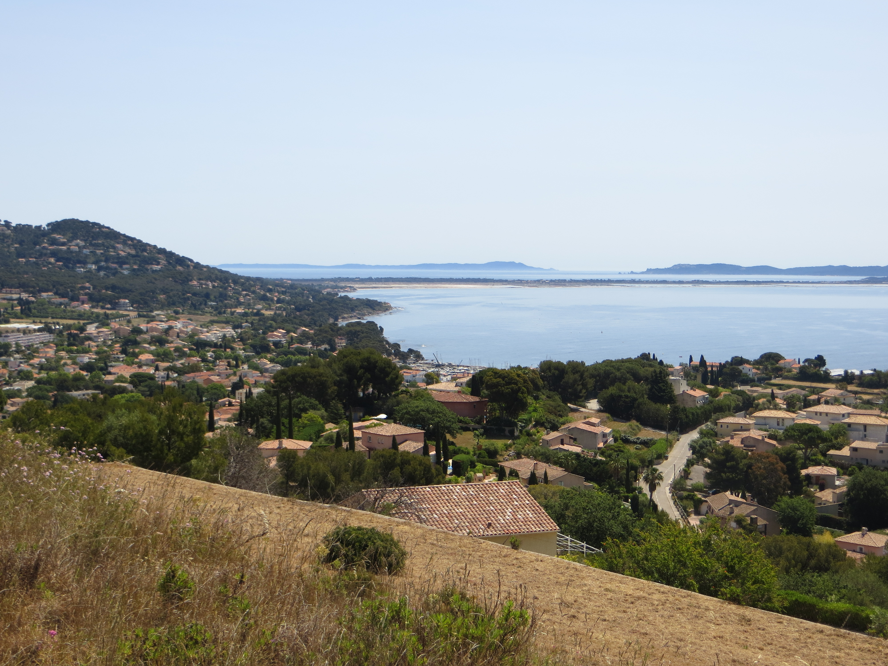

Projet DURB – « La dépendance à l’urbanisation des territoires littoraux : existe-t-il des alternatives au tout résidentiel ? » (2017-2019)
Financé par la Fondation de France dans le cadre de son appel à projet « Quels littoraux pour demain ? »
Crédit Pierre Le Brun - DURB, juin 2019, commune de Carqueiranne (Var)